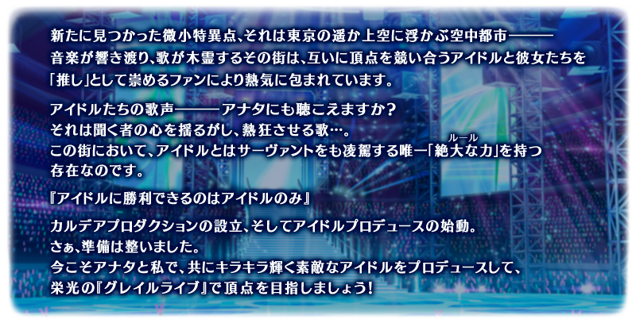
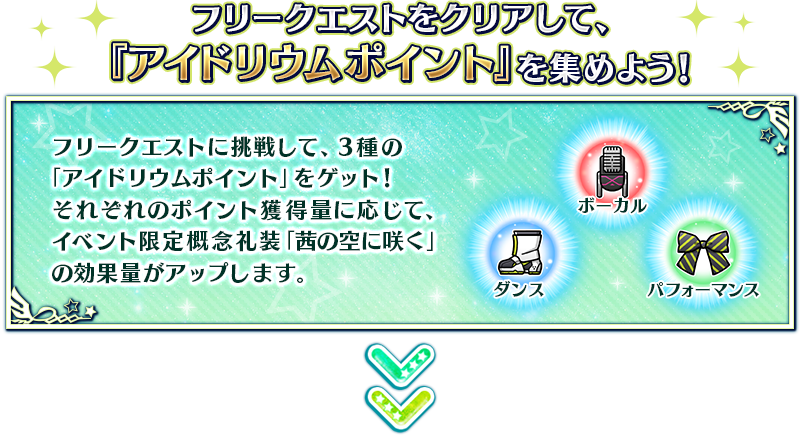
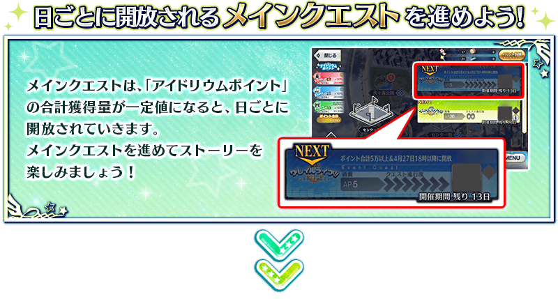
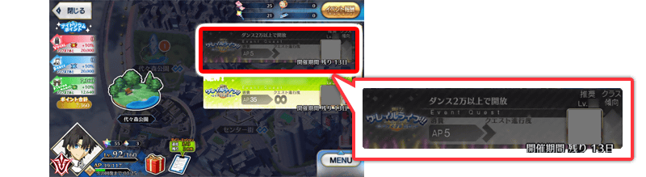
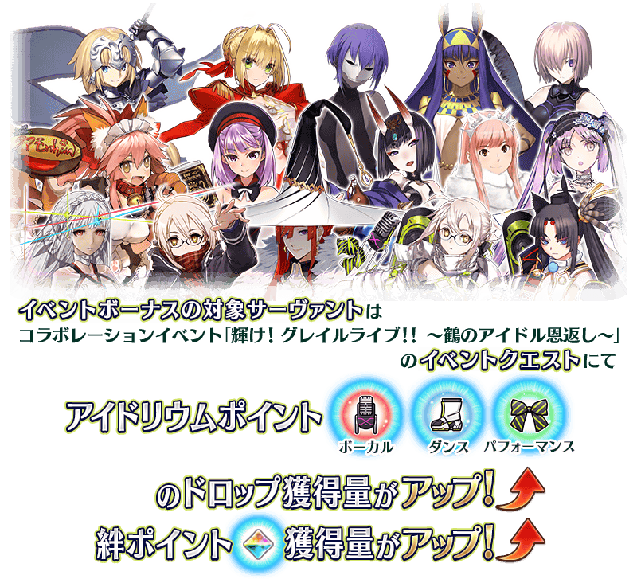
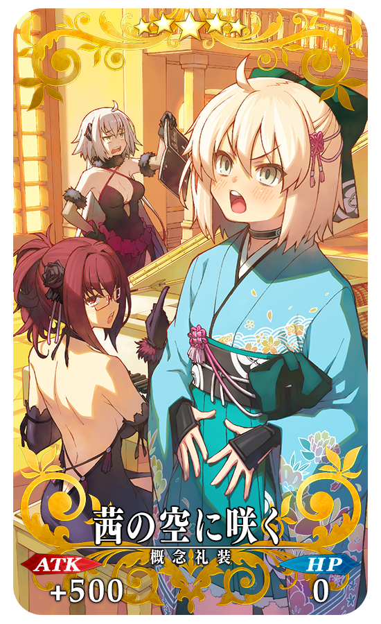
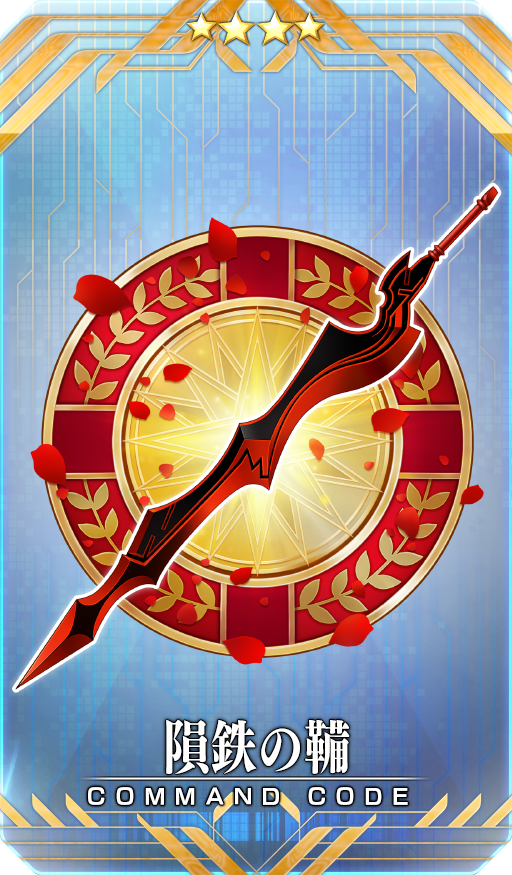
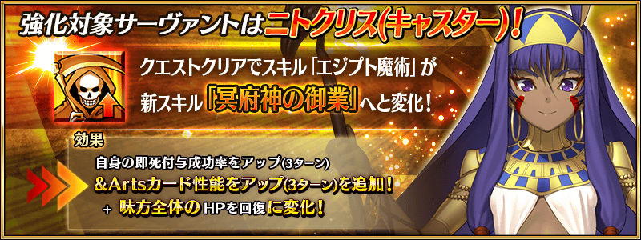
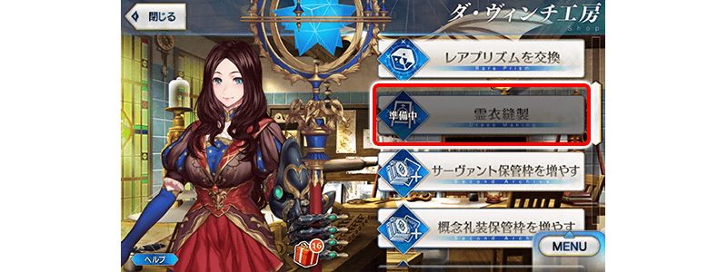

舉辦期間限定Fate/Grand Order Waltz in the MOONLIGHT/LOSTROOM×Fate/Grand Order聯動活動「閃耀吧！ 聖杯演唱會！！ ～鶴的偶像報恩～」！
御主們靈子轉移到偶像掌握人心，持有巨大之力的微小特異點。
優勝會得到聖杯『聖杯演唱會』中必須勝利，開始由御主來偶像育成！
本活動中進行主線關卡的話，活動限定從者「★4(SR)謎之偶像X〔Alter〕」會以期間限定暫時加入。
更加推進主線關卡，讓「★4(SR)謎之偶像X〔Alter〕」正式加入吧！
※本頁面皆為開發中圖片。會有與實際圖片相異的情況。 ※一部份的關卡は後日開放されます。
◆活動舉辦期間◆
2021年4月26日(一) 19:30～5月10日(一) 11:59
◆活動參加條件◆
滿足以下條件的御主才能參加
・通過「特異點F 炎上汙染都市 冬木」
◆有關從者真名的注意◆
在2018年12月31日(二) 23:00以後新配信的主線故事及期間限定活動、一部份關卡、宣傳活動及召喚中，會顯示隱藏真名的對象從者真名。
※2018年12月31日(一) 22:59前已經配信的主線故事、復刻活動、一部份關卡中不在此限。

在「Fate/Grand Order」官方網站內首頁及Gallery，公開了期間限定Fate/Grand Order Waltz in the MOONLIGHT/LOSTROOM×Fate/Grand Order聯動活動「閃耀吧！ 聖杯演唱會！！ ～鶴的偶像報恩～」的電視廣告。
敬請確認。


享受故事的主線關卡將逐日開放。
推進主線關卡的話，活動限定從者「★4(SR)謎之偶像X〔Alter〕」會正式加入。
通過主線關卡第一節後，會開放收集活動道具的自由關卡。
【關卡的舉辦期間】
| 關卡的種類 | 舉辦期間 |
|---|---|
| 序幕(プロローグ) 主線關卡第一節 自由關卡 |
2021年4月26日(一) 19:30～ 5月10日(一) 11:59 |
| 主線關卡第二節 自由關卡 |
2021年4月27日(二) 17:00～ 5月10日(一) 11:59 |
| 主線關卡第三節 自由關卡 |
謎之偶像X〔Alter〕正式加入
2021年4月28日(三) 17:00～
5月10日(一) 11:59 |
| 主線關卡第四節 主線關卡第五節 自由關卡 |
2021年4月29日(四) 17:00～ 5月10日(一) 11:59 |
| 主線關卡第六節 自由關卡 |
2021年4月30日(五) 17:00～ 5月10日(一) 11:59 |
| 主線關卡第七節 | 2021年5月1日(六) 17:00～ 5月10日(一) 11:59 |
| 主線關卡第八節 主線關卡第九節 後記(エピローグ) 自由關卡 |
2021年5月2日(日) 17:00～ 5月10日(一) 11:59 |
※活動舉辦期間中，無法進行活動限定從者「★4(SR)謎之偶像X〔Alter〕」的販賣、合成、移動到靈基保管室。
聯動活動「閃耀吧！ 聖杯演唱會！！ ～鶴的偶像報恩～」中，通過特定關卡的話可靠關卡通過報酬和活動道具交換入手全12種靈衣開放權！
可入手的靈衣，是在本活動劇情登場從者們所穿的偶像靈衣。
※想要靈衣開放的話，除了靈衣開放權外必須再加上一些開放條件。 ※請注意未持有靈衣開放權對象從者的情況，可入手靈衣開放權。但無法進行靈衣開放。

本活動中追加的偶像靈衣，可使用只在活動舉辦期間中可靠活動點數報酬入手的「偶像靈衣開放券」來開放。
使用「偶像靈衣開放券」開放的偶像靈衣，不需要素材和QP。
◆「偶像靈衣開放券」入手期間◆
2021年4月26日(一) 19:30～5月10日(一) 11:59
◆有關偶像靈衣的靈衣開放權的注意◆
※各偶像靈衣的靈衣開放所需的偶像靈衣開放券，只限聯動活動「閃耀吧！ 聖杯演唱會！！ ～鶴的偶像報恩～」的活動舉辦期間中才能入手。
※活動期間結束後(2021年5月10日(一) 12:00以後)進行偶像靈衣的靈衣開放時，變得可選擇使用偶像靈衣開放券來開放，或跟平常的靈衣同様使用QP與素材來開放。
進行主線關卡與獲得「偶像粒子點數」一定量後可挑戰的「Live關卡」，通過的話可得到活動道具等的豪華關卡報酬。
另外，「Live關卡」的戰鬥與平常的戰鬥不同，是特殊的「Live戰鬥」形式戰鬥。
※通過一次的關卡無法再次挑戰。

「Live戰鬥」是本活動的一部份主線關卡和自由關卡，「Live關卡」中偶像同好決戰的特殊戰鬥。
與平常的戰鬥不同，會對配置在戰鬥畫面中央的從者賦予「Center效果」，配置活動限定從者「★4(SR)謎之偶像X〔Alter〕」和穿上偶像靈衣的從者在中央的話，戰鬥BGM會變更成專屬的BGM。
強化配置在中央從者的「Center效果」
戰鬥畫面中，會對配置在中央的從者賦予常駐「Center效果」。
賦予「Center效果」的從者，會得到以下的效果。
・自身的Critical威力提升
・星星集中度提升
・賦予每回合星星獲得狀態
※使用御主技能的「Order Change(オーダーチェンジ)」來變更從者配置的情況，會對移動到中央位置的從者賦予新的「Center效果」。屆時，原本配置在中央的從者會解除「Center效果」。 ※就算戰鬥中的剩餘從者數變成2位以下的情況，也會對配置在中央的從者賦予「Center效果」。
【變更BGM的靈衣一覧】
| 靈衣 | 對象從者 | |
|---|---|---|
| Bright Voyager | ★3 瑪修・基利艾拉特 | |
| それってとってもマハトマね☆ | ★4 海倫娜・布拉瓦茨基(Caster) | |
| 掌の星屑 | ★5 阿蒂拉(Saber) | |
| Beyond the Mirror | ★4 尼托克里絲(Caster) | |
| 愛しき私の敵対者 | ★5 女王梅芙(Rider) | |
| 夜に咲く毒の華 | ★3 靜謐的哈桑 | |
| 笑顔 glory day | ★4 玉藻貓 | |
| mirage | ★3 尤瑞艾莉 | |
| 桜歌爛漫 | ★5 酒吞童子(Assassin) | |
| Prove | ★5 貞德(Ruler) | |
| サイケデリック流離譚 | ★3 牛若丸(Rider) | |
| 覇嵐蛮嬢ラプソディア | ★4 尼祿・克勞狄烏斯(Saber) | |
※一部份從者，配置在中央時會播放與靈衣名不同的歌曲做為BGM。

收集通過自由關卡可獲得的「偶像粒子點數〔Vocal〕」、「偶像粒子點數〔Dance〕」、「偶像粒子點數〔Performance〕」後，對應各自的獲得量會讓活動限定概念禮裝「★5(SSR)茜の空に咲く」的效果量提升。
【5月3日(一) 17:00追記】
以通過聯動活動「閃耀吧！ 聖杯演唱會！！ ～鶴的偶像報恩～」後記(エピローグ)及「終局特異點」的御主做為對象，開放高難易度的「挑戰關卡」。
「挑戰關卡」就算通過後也不會消失，可以變更從者和概念禮裝的組合等後無限次挑戰。
※關卡通過報酬、戰利品、御主EXP、魔術禮裝EXP、絆點數只可在初次通過時獲得。 ※本活動的「挑戰關卡」是「LIVE戰鬥」的形式。
◆挑戰關卡開放時間◆
2021年5月3日(一) 17:00～
◆挑戰關卡參加條件◆
滿足以下條件的御主才能參加
・通過聯動活動「閃耀吧！ 聖杯演唱會！！ ～鶴的偶像報恩～」的後記(エピローグ)
・通過「終局特異點」
◆挑戰關卡初次通過報酬◆
傳承結晶 1個
超值攻略方法・其1
本活動的期間中，強化「★4(SR)謎之偶像X〔Alter〕」時的獲得經驗值變成2倍。
是讓活動加成對象「★4(SR)謎之偶像X〔Alter〕」等級一口氣上升的機會！
◆舉辦期間◆
2021年4月26日(一) 19:30～5月10日(一) 11:59
超值攻略方法・其2
本活動的期間中，下表的從者在活動關卡中會得到『「偶像粒子點數〔Vocal〕」「偶像粒子點數〔Dance〕」「偶像粒子點數〔Performance〕」的掉落獲得量提升』與「絆點數獲得量提升」的加成！
強化對象從者，向活動挑戰吧！
※活動加成的效果量因從者而異。 ※瑪修・基利艾拉特「絆點數獲得量提升」效果，是所謂「我方全體含候補的絆點數獲得量提升」的效果。支援時此效果無效。 ※請注意各關卡的活動點數掉落率並非100％。

【活動加成的效果與對象從者】
| 偶像粒子 點數 獲得量 |
絆點數 獲得量 |
職階 | 稀有度 | 從者名 |
|---|---|---|---|---|
| ＋30% | 只限自身 ＋50% |
Caster | ★★★★★ | Miss鶴 |
| Foreigner | ★★★★ | 謎之偶像X〔Alter〕 | ||
| ＋20% | 只限自身 ＋20% |
Saber | ★★★★★ | 阿蒂拉 |
| ★★★★ | 尼祿・克勞狄烏斯 | |||
| Archer | ★★★ | 尤瑞艾莉 | ||
| Lancer | ★★★★ | 伊莉莎白・巴托里 | ||
| Rider | ★★★★★ | 女王梅芙 | ||
| ★★★ | 牛若丸 | |||
| Caster | ★★★★ | 海倫娜・布拉瓦茨基 | ||
| ★★★★ | 尼托克里絲 | |||
| Assassin | ★★★★★ | 酒吞童子 | ||
| ★★★ | 靜謐的哈桑 | |||
| Berserker | ★★★★★ | 謎之女主角X〔Alter〕 | ||
| ★★★★ | 玉藻貓 | |||
| Ruler | ★★★★★ | 貞德 | ||
| 我方全體 ＋5% |
Shielder | ★★★ | 瑪修・基利艾拉特 | |
| ＋10% | 只限自身 ＋20% |
Saber | ★★★★★ | 阿爾托莉亞・潘德拉剛 |
| ★★★★★ | 沖田總司 | |||
| ★★★★ | 高文 | |||
| ★★★★ | 齊格飛 | |||
| ★★★★ | 女王梅芙 | |||
| ★★★★ | 羅摩 | |||
| ★★★★ | 蘭斯洛特 | |||
| ★★★ | 貝德維爾 | |||
| Archer | ★★★★★ | 阿周那 | ||
| ★★★★★ | 伊絲塔 | |||
| ★★★★ | 馬嘶 | |||
| ★★★★ | 災星簡 | |||
| ★★★★ | 崔斯坦 | |||
| ★★★ | 子吉爾 | |||
| ★★★ | 比利小子 | |||
| ★★ | 帕里斯 | |||
| ★ | 織田信勝 | |||
| Lancer | ★★★★★ | 迦爾納 | ||
| ★★★★★ | 斯卡薩哈 | |||
| ★★★★★ | 布倫希爾德 | |||
| ★★★★ | 貞德・Alter・Santa・Lily | |||
| ★★★★ | 瓦爾基里 | |||
| Rider | ★★★★★ | 奧茲曼迪亞斯 | ||
| ★★★★★ | 李奧納多・達・文西 | |||
| ★★★ | 亞歷山大 | |||
| Caster | ★★★★★ | 雪赫拉莎德(不夜城的Caster) | ||
| ★★★★★ | 李奧納多・達・文西 | |||
| ★★★★ | 童謠 | |||
| ★★ | 威廉・莎士比亞 | |||
| Assassin | ★★★★★ | 開膛手傑克 | ||
| ★★★★ | 尼托克里絲 | |||
| ★ | 佐佐木小次郎 | |||
| Berserker | ★★★★ | 茨木童子 | ||
| ★★★★ | 織田信長 | |||
| ★★★★ | 鬼女紅葉 | |||
| ★★★ | 清姬 | |||
| Avenger | ★★★★★ | 貞德〔Alter〕 | ||
| Foreigner | ★★★★★ | 艾比蓋兒・威廉斯 | ||
| ★★★★★ | 葛飾北齋 | |||
| ★★★★★ | 航海家 |
※就算成為對象從者也會有未在本活動的主線劇本登場的情況。
※自4月21日(三) 17:00，在從者選擇畫面和從者強化畫面等，追加活動加成篩選器。
由於是只顯示於活動活躍從者的便利功能，敬請活用。
超值攻略方法・其3
裝備活動限定概念禮裝與期間限定概念禮裝的話，在活動中會受到各式各樣的恩惠。
裝備可靠活動點數報酬和活動道具交換入手的活動限定概念禮裝活動限定概念禮裝「★5(SSR)茜の空に咲く」的話，在聯動活動「閃耀吧！ 聖杯演唱會！！ ～鶴的偶像報恩～」中偶像粒子點數〔Vocal〕、偶像粒子點數〔Dance〕、偶像粒子點數〔Performance〕的掉落獲得量會提升！
另外，裝備在聖晶石召喚Pick Up的期間限定概念禮裝「★5(SSR)フラワー・サンシャイン」「★4(SR)カルデア・スターズ」「★3(R)キャメロット・レッスン」的話，活動道具「聖晶石螢光棒」「皇帝扇子」「聖魂毛巾」各自的掉落獲得數會提升。
※請注意各關卡的道具掉落率並非100％。

|  |
★★★★★SSR
|
|
【活動限定】 |
|  |
★★★★SR |
|
★★★R |
◆靈基再臨◆
使用能靠活動點數報酬和活動道具交換入手的「宇宙吉他」，重複4次靈基再臨的話，卡面會有所變化！
※「★4(SR)謎之偶像X〔Alter〕」不會隨靈基再臨使戰鬥角色的外觀變化。
介紹「★4(SR)謎之偶像X〔Alter〕」的寶具演出！
「★4(SR)謎之偶像X〔Alter〕」的寶具演出於一部份裝置有對應全螢幕顯示。
活動道具可自點擊管理室(ターミナル)畫面右上「活動報酬」的「活動道具交換」畫面，交換以下的道具。
※活動道具交換期間結束後「聖晶石螢光棒」「皇帝扇子」「聖魂毛巾」會消失。
◆交換期間◆
2021年4月26日(一) 19:30～5月17日(一) 11:59
◆能用聖晶石螢光棒交換的道具◆
|
【活動限定從者靈基再臨素材】 【活動限定概念禮裝】 【技能強化＆靈基再臨素材】 【靈基再臨素材】 【其他道具】 |
◆能用皇帝扇子交換的道具◆
|
【活動限定概念禮裝】 【技能強化＆靈基再臨素材】 【靈基再臨素材】 【其他道具】 |
◆能用聖魂毛巾交換的道具◆
|
【技能強化＆靈基再臨素材】 【其他道具】 |
◆能用活動道具交換入手的靈衣開放權◆
| 靈衣開放權 | |
|---|---|
| 靈衣「掌の星屑」開放權 | |
| 靈衣「愛しき私の敵対者」開放權 | |
| 靈衣「桜歌爛漫」開放權 | |
| 靈衣「Prove」開放權 | |
| 靈衣「覇嵐蛮嬢ラプソディア」開放權 | |
| 靈衣「それってとってもマハトマね☆」開放權 | |
| 靈衣「Beyond the Mirror」開放權 | |
| 靈衣「笑顔 glory day」開放權 | |
| 靈衣「mirage」開放權 | |
| 靈衣「サイケデリック流離譚」開放權 | |
| 靈衣「夜に咲く毒の華」開放權 | |
※能交換的靈衣開放權會隨本活動的主線關卡推進而追加。 ※在活動道具交換追加順序，與上述順序不同。 ※靈衣開放權的交換不用活動道具。
強化「★5(SSR)謎之女主角X〔Alter〕」「★4(SR)尼托克里絲(Caster)」「★3(R)靜謐的哈桑」的特別關卡「從者強化關卡」，自下述時間在迦勒底之門永久追加。
不僅進行對象從者的強化，也可獲得聖晶石做為關卡通過報酬。
※請注意在從者強化關卡沒有文字冒險部份。
◆追加時間◆
2021年4月26日(一) 19:30～
◆開放條件◆
持有的強化對象從者，必須使其最終再臨。
※未持有對象從者的話，不會出現關卡。
※關卡沒有舉辦期限。



從2021年4月26日(一) 19:30，在達文西工房以準備中狀態追加靈衣交換専用的商店「靈衣縫製」。
「靈衣縫製」是集合可在達文西工房的「魔力稜鏡交換」和「稀有稜鏡交換」交換靈衣開放權的専用商店。
「靈衣縫製」會從2021年5月17日(一) 12:00永久開放。
※想要靈衣開放的話，除了靈衣開放權外必須再加上一些開放條件。 ※已經能在「魔力稜鏡交換」「稀有稜鏡交換」交換的靈衣開放權會移動到「靈衣縫製」。

◆有關靈衣開放權的注意◆
※一部份的靈衣會配合外觀變化一部份語音。
※請注意未持有該從者的情況，可入手靈衣開放權。但無法進行靈衣開放。
◆追加時間◆
2021年4月26日(一) 19:30～
◆開放時間◆
2021年5月17日(一) 12:00～
◆交換道具(永久)◆
| 交換道具 | 對象從者 | 能交換次數 | 1次交換所需的 稀有稜鏡/ 魔力稜鏡數 |
|---|---|---|---|
| 簡易靈衣「惡魔卡蓮」開放權 | ★5 卡蓮・Ｃ・奧爾黛西亞(埃莫〔卡蓮〕) | 1次 | 稀有稜鏡 2個 |
| 靈衣「奧林匹亞的體操服」開放權 | ★4 尼祿・克勞狄烏斯(Saber) | 1次 | 稀有稜鏡 5個 |
| 靈衣「魅惑的典獄長服飾」開放權 | ★5 女王梅芙(Rider) | 1次 | 稀有稜鏡 5個 |
| 靈衣「銀色管家」開放權 | ★3 貝德維爾 | 1次 | 魔力稜鏡 1000個 |
| 靈衣「常夏的泳裝Ver.02」開放權 | ★3 瑪修・基利艾拉特 | 1次 | 稀有稜鏡 5個 |
| 靈衣「常夏的泳裝」開放權獲得關卡 | ★3 瑪修・基利艾拉特 | 1次 | 稀有稜鏡 5個 |
| 簡易靈衣「風王結界」開放權 | ★5 阿爾托莉亞・潘德拉剛(Saber) | 1次 | 魔力稜鏡 500個 |
| 靈衣「漆黑的騎士王ver新宿1999」開放權 | ★4 阿爾托莉亞・潘德拉剛〔Alter〕(Saber) | 1次 | 魔力稜鏡 1000個 |
| 靈衣「白色玫瑰」開放權 | ★5 亞瑟・潘德拉剛〔Prototype〕 | 1次 | 稀有稜鏡 5個 |
| 簡易靈衣「眼鏡(第一再臨)」開放權 | ★5 李書文(Assassin) | 1次 | 魔力稜鏡 500個 |
| 簡易靈衣「眼鏡(第二再臨)」開放權 | ★5 李書文(Assassin) | 1次 | 魔力稜鏡 500個 |
| 靈衣「於圖利法斯的回憶」開放權 | ★4 阿斯托爾福(Rider) | 1次 | 魔力稜鏡 1000個 |
| 靈衣「少女尋找物」開放權 | ★4 帕爾瓦蒂 | 1次 | 魔力稜鏡 1000個 |
【4月27日(二) 23:00追記】
其他還有，
・FGO Waltz in the MOONLIGHT/LOSTROOM聯動活動Pick Up召喚(每日交替)
・Fate/Grand Order Waltz in the MOONLIGHT/LOSTROOM×Fate/Grand Order聯動活動開幕前夕宣傳活動
・FGO Waltz in the MOONLIGHT/LOSTROOM聯動活動開幕前夕Pick Up召喚(每日交替)
・FGO Waltz in the MOONLIGHT/LOSTROOM聯動活動Pick Up2召喚(每日交替)
以期間限定舉辦中！
關於詳情，請自下述橫幅確認。
■「FGO Waltz in the MOONLIGHT/LOSTROOM聯動活動Pick Up召喚(每日交替)」詳細情報

■「FGO Waltz in the MOONLIGHT/LOSTROOM聯動活動Pick Up2召喚(每日交替)」詳細情報

■「Fate/Grand Order Waltz in the MOONLIGHT/LOSTROOM×Fate/Grand Order聯動活動開幕前夕宣傳活動」詳細情報

■「FGO Waltz in the MOONLIGHT/LOSTROOM聯動活動開幕前夕Pick Up召喚(每日交替)」詳細情報